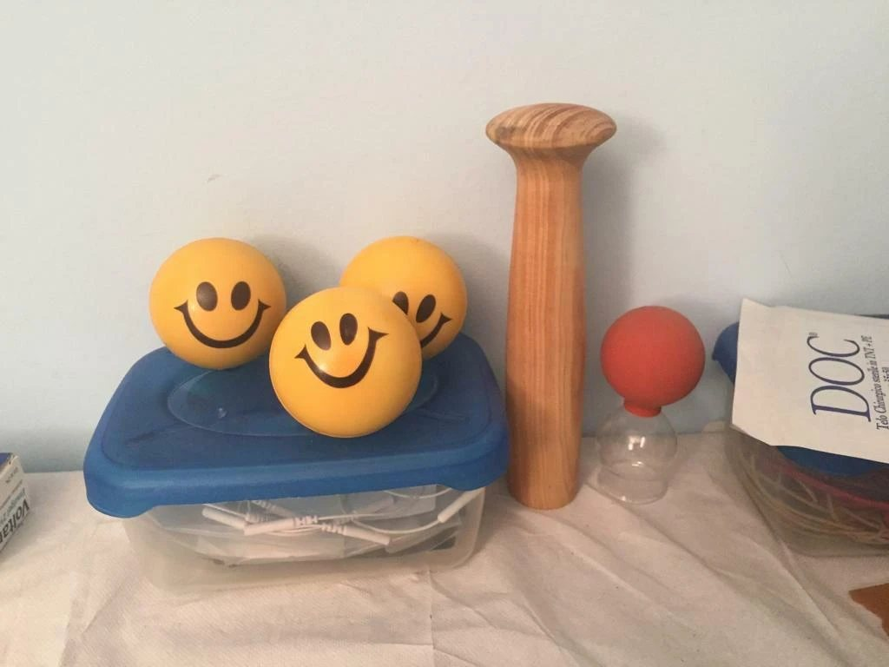

Terapia manuale
Delicate manovre e mobilizzazioni pelviche, anche intravaginali e intrarettali, mirate alla normalizzazione muscolare e articolare del bacino. Include il Protocollo Stanford per i trigger point.
ManualeUn solo obiettivo: ripristinare la funzione. Dopo un’accurata anamnesi e un esame obiettivo si elabora un protocollo di lavoro personale.
Il pavimento pelvico è la struttura muscolo-tendinea che chiude inferiormente il bacino e interviene in tre funzioni: urinaria, defecatoria e sessuale.
La rieducazione è una branca della fisioterapia che permette di risolvere in modo non invasivo tutta una serie di disfunzioni di questa struttura.
Delicate manovre e mobilizzazioni pelviche, anche intravaginali e intrarettali, mirate alla normalizzazione muscolare e articolare del bacino. Include il Protocollo Stanford per i trigger point.
ManualeUno strumento che facilita la presa di coscienza del perineo e del suo funzionamento: rende visibile l’attività muscolare, così da poterla controllare.
StrumentaleUn neuromodulatore capace di agire sui circuiti neurologici che regolano il perineo, per via intravaginale, intra-anale o transcutanea.
StrumentaleIndicata nella vescica iperattiva: innalza la soglia di percezione dello stimolo urinario, riducendo frequenza e urgenza della minzione.
NeuromodulazioneProgrammi di esercizi personalizzati e indicazioni comportamentali, per rendere il paziente autonomo nella gestione del proprio disturbo.
EducazioneLa rieducazione posturale Metodo Mézières integra il trattamento del pavimento pelvico, per intervenire sia sul sintomo sia sulla causa.
IntegratoPalline, strumenti in legno e in vetro, gli elettrodi per l’elettrostimolazione: lavoro non invasivo, che si può imparare a ripetere anche a casa.

Le stesse tecniche si adattano a donne, uomini e bambini, con un protocollo personale per ciascuno.
Chiami lo studio dal lunedì al venerdì, in orario d’ufficio.